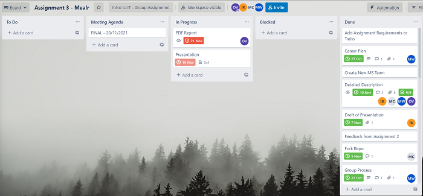
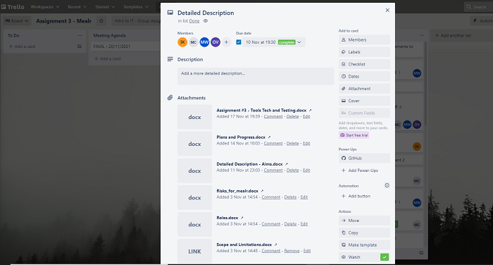

Throughout assignment 2 and 3 the team have utilised other tools to maintain a record of who has completed what tasks. As noted by Mitchell, the team have used Trello to keep track of the tasks that make up the assignment, the team member who is responsible for completing the task, the due dates, and the completion status of the overall assignment. As a result, the GitHub has only been used towards the end of the assignment to update the team website and provide the information within this report in a more digestible format.
 In saying this, the team have found that the auditing within GitHub and the ability review the commits before merging branches have allowed the team to ensure that work is not being overridden in the event that multiple team members are working on the website at the same time. This also allows the team to review the changes made by Shanice; who completed much of the initial website design; and roll back changes if required.